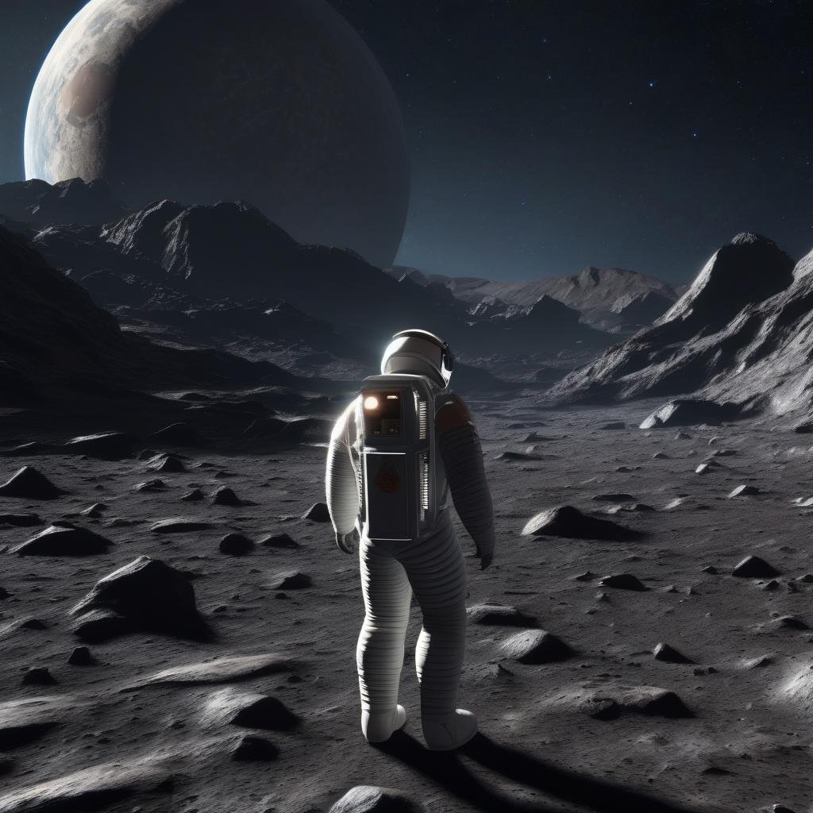

Iniciar o Jogo
Sua espaçonave caiu na superfície da lua. Você tem oxigênio e energia limitados. Você precisa encontrar o foguete que está na estação de lançamentos para poder retornar para a terra. Ah! Você está só!!!